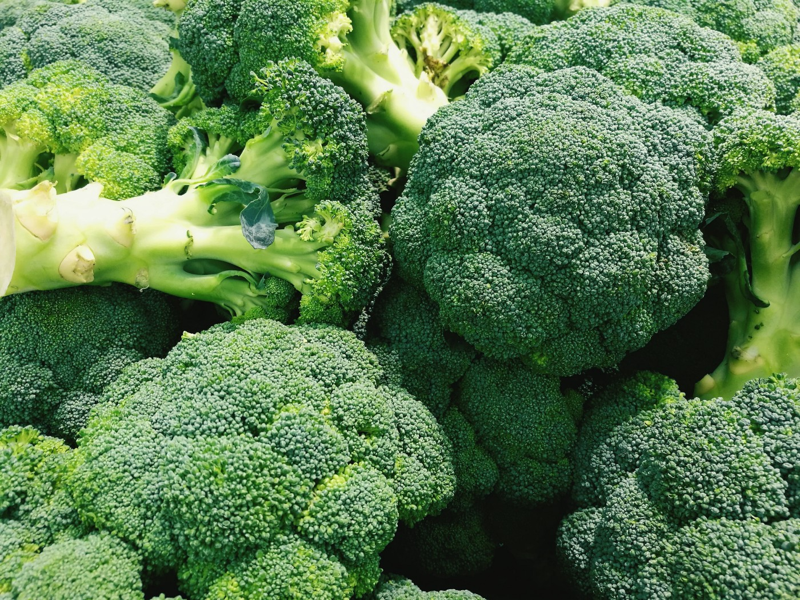
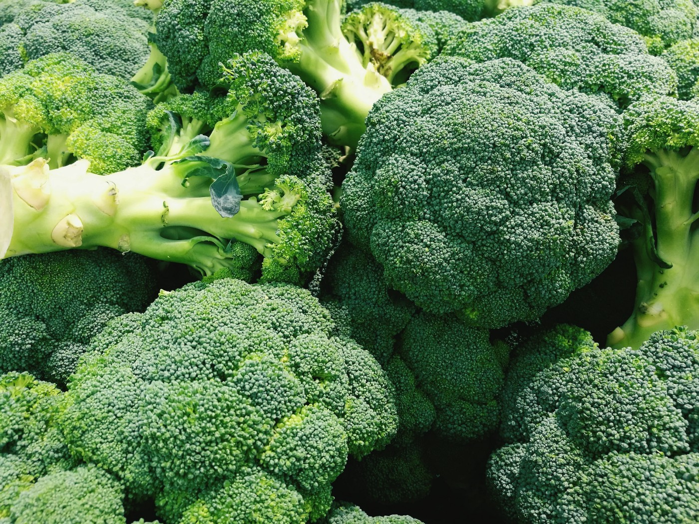

SOME FAVORITES
Wild & Wacky Vegetables
The beet is the most intense of vegetables. The radish, admittedly, is more feverish, but the fire of radish is a cold fire, the fire of discontent not of passion. Tomatoes are lustly enough, yet there runs through tomatoes an undercurrent of frivolity. Beets are deadly serious.
Some Diseases
| Veggie | Disease |
|---|---|
| Beets | Beeturia |
| Carrots | Carotenosis |
| Tomatoes | Tomatoa Disease |
 
